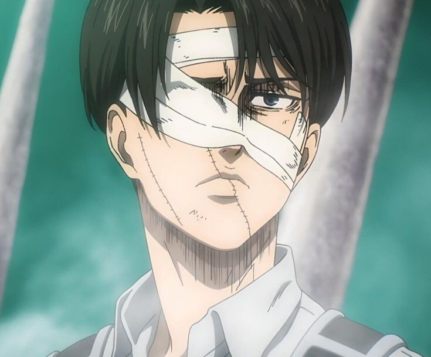

KARAKTER
LEVI ACKERMAN
Levi Ackerman (リヴァイ アッカーマン) adalah karakter fiksi dari serial manga Attack on Titan karya Hajime Isayama. Levi adalah seorang prajurit yang bekerja untuk Pasukan Operasi Khusus Survey Corps (調査兵団特別作戦班), juga dikenal sebagai Pasukan Levi (リヴァイ班), sebuah pasukan yang terdiri dari empat prajurit elit dengan catatan tempur mengesankan yang dipilih sendiri olehnya. Pasukan ini membawa protagonis Eren Yeager di bawah sayap mereka sebagai pengawalnya dan calon eksekutor jika dia mengamuk. Meskipun Levi adalah karakter pendukung, latar belakangnya dieksplorasi saat berhadapan dengan mantan mentornya Kenny selama seri utama.